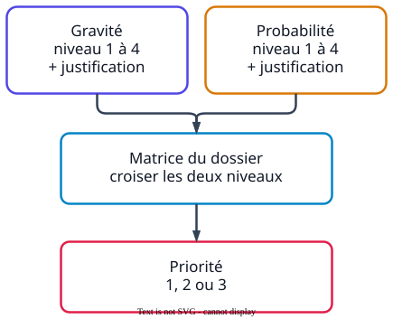

Ce que demandent les sujets
- « Estimer le niveau de gravité et la probabilité d'apparition du dommage. Justifier la réponse. »
- « Évaluer la priorité de ce risque. »
La méthode

Exemple d'échelles et de matrice
À l'examen, les échelles et la matrice sont toujours fournies dans le dossier : ce sont elles qu'il faut utiliser.
Gravité
- 1 dommage sans arrêt de travail
- 2 dommage avec arrêt de travail
- 3 incapacité permanente
- 4 décès
Probabilité
- 1 très improbable
- 2 improbable
- 3 probable
- 4 très probable, exposition quotidienne
| Gravité ↓ · Probabilité → | 1 | 2 | 3 | 4 |
|---|---|---|---|---|
| 4 | 2 | 2 | 1 | 1 |
| 3 | 3 | 2 | 1 | 1 |
| 2 | 3 | 2 | 2 | 2 |
| 1 | 3 | 3 | 3 | 2 |
Comment lire : la case où se croisent la ligne de la gravité et la colonne de la probabilité donne la priorité. Priorité 1 : risque à traiter en premier.
À retenir
- Gravité
- importance du dommage possible, du dommage sans arrêt de travail au décès.
- Probabilité d'occurrence
- possibilité que le dommage arrive ; elle augmente avec la fréquence d'exposition.
- Niveau de priorité
- résultat du croisement de la gravité et de la probabilité : il indique quels risques traiter en premier.
- La forme attendue
- le niveau de l'échelle du dossier (chiffre ou lettre) et une justification tirée de la situation. Un niveau sans justification vaut insuffisant.
Un exemple de bac
« Expliquer les niveaux de gravité et de probabilité d'apparition du dommage figurant dans l'extrait du DUERP. »
Sujet 2023, métropole
InsuffisantLa gravité est de 3 et la probabilité de 4.
MaîtriséGravité 3, car la maladie entraîne une incapacité permanente. Probabilité 4, car l'exposition est fréquente et longue : le dommage est très probable.
Chaque niveau doit être justifié par la situation. Les chiffres seuls ne montrent pas le raisonnement.